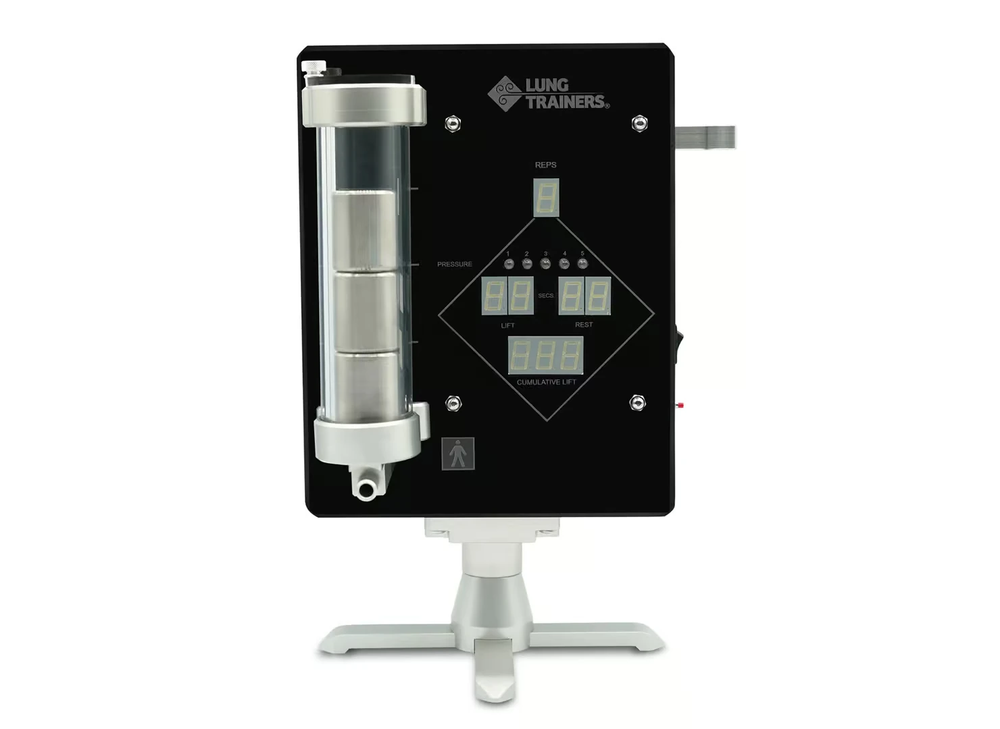
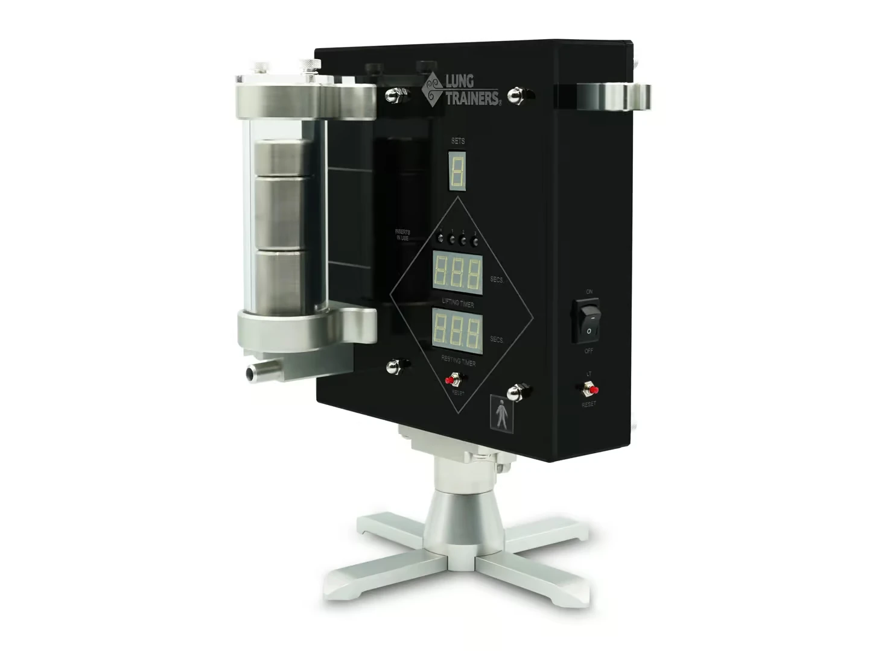
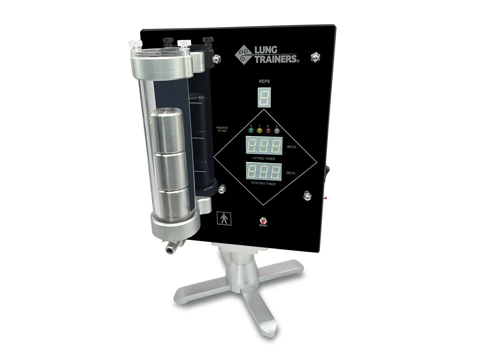

≈500 mil
personas en Estados Unidos
Estimación publicada de personas que viven con bronquiectasia. Representa contexto de prevalencia, no el mercado automáticamente disponible.
Journal of the American Medical Association, 2025 ↗Investigación estratégica · Septiembre 2026
LungTrainers ya cuenta con activos regulatorios, una investigación clínica en curso y un producto visualmente diferenciable. El siguiente reto es convertirlos en una categoría comercial clara, creíble y masiva.
Presentación inicial preparada por CPDA Studios. El objetivo es vender el producto; no prestar tratamientos ni administrar seguros médicos.

El punto de entrada
Es el espacio donde mejor coinciden la función autorizada del producto, una necesidad clínica reconocida y la investigación específica de LungTrainer.
Estimación publicada de personas que viven con bronquiectasia. Representa contexto de prevalencia, no el mercado automáticamente disponible.
Journal of the American Medical Association, 2025 ↗Ingresos globales reportados por Insmed para BRINSUPRI en el segundo trimestre de 2026: una señal concreta de actividad comercial dentro de esta enfermedad.
Insmed, segundo trimestre de 2026 ↗Una segunda población de gran tamaño que merece evaluarse por segmentos y necesidades concretas, sin convertirla en una promesa universal.
CDC (Centros para el Control y la Prevención de Enfermedades) ↗La oportunidad no nace del tamaño de “la medicina”. Nace de identificar una necesidad concreta, demostrar por qué este producto facilita atenderla y construir un sistema de distribución capaz de repetir esa venta.
Activos comprobables
La clave es contarla con precisión. Una autorización permite comercializar para usos definidos; un ensayo en curso abre una vía de validación. Ninguno equivale todavía a probar todas las afirmaciones posibles.
FDA (Administración de Alimentos y Medicamentos de Estados Unidos) · 510(k) K221058
Ejercicio espiratorio, PEP (presión espiratoria positiva) y asistencia en la eliminación de moco para pacientes desde los 12 años, en clínica o domicilio, bajo prescripción.
ClinicalTrials.gov · NCT05860803
Estudia entrenamiento domiciliario con LungTrainer en bronquiectasia no asociada a fibrosis quística. Está registrado como ensayo aleatorizado, con 50 participantes previstos.
El contexto profesional
La guía de la ERS (Sociedad Respiratoria Europea) de 2025 hace una recomendación fuerte para que los pacientes con bronquiectasia aprendan estas técnicas, aunque califica la certeza de la evidencia como muy baja y no establece una técnica superior.
Guía ERS (Sociedad Respiratoria Europea), 2025 ↗El reto de valor
El mercado ya ofrece dispositivos respiratorios económicos. Para escalar, LungTrainers debe hacer visible qué aporta su experiencia física, su retroalimentación y su diseño en el uso real.


Hacer comprensible la relación entre resistencia, presión y ejecución.
Separar claramente modelos médicos, funciones y escenarios de uso.
Dar a profesionales y compradores materiales que reduzcan la fricción de adopción.
Distinguir lo demostrado, lo que está en estudio y las oportunidades futuras.
Dirección comercial
La estrategia no depende de administrar tratamientos ni facturar seguros. Usa el contexto médico para comunicar valor, influir en la recomendación y multiplicar los puntos de venta.
POSICIONAR
Bronquiectasia como entrada; EPOC (enfermedad pulmonar obstructiva crónica) seleccionada como segunda expansión; otras áreas después de validar producto y mensaje.
ACTIVAR
Neumólogos, terapeutas respiratorios, fisioterapeutas y distribuidores como canales de demostración y recomendación.
ESCALAR
Contenido educativo, demostraciones, alianzas y comercio directo con una explicación consistente del valor.
✓ Venta de equipos y accesorios
✓ Materiales para profesionales y compradores
✓ Generación de demanda y nuevos canales
— Sin operar tratamientos ni seguros médicos
Prioridades recomendadas
La convergencia más fuerte entre autorización, investigación y necesidad de eliminación de secreciones.
Gran población y canales existentes, con necesidad de definir quién se beneficia y por qué.
La categoría de entrenamiento espiratorio muestra señales; LungTrainer necesitará evidencia propia aplicable.